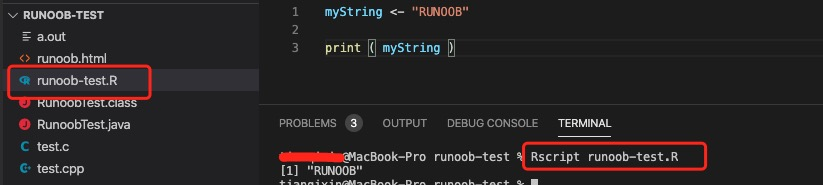

R言語の基礎
新しい言語の学習は通常、"Hello, World!" プログラムの出力から始まります。R言語の "Hello, World!" プログラムのコードは次のとおりです：
上記の例では、文字列 "Hello, World!" を myString 変数に代入し、print() 関数で出力しています。
注意：R言語の代入では左矢印<-記号を使用しますが、一部の新しいバージョンでは等号もサポートされています。=。
注意：R言語で最も一般的なスクリプトファイルの拡張子は.R。
例：
hello.R data_analysis.R stock.Rとはいえ、.r.r も使用できますが、コミュニティの主流はほぼすべて .R です。 .R。
変数
R言語の有効な変数名は、英字、数字、およびドット（ . ）.またはアンダースコア（ _ ）_で構成されます。
変数名は英字またはドットで始まります。
| 変数名 | 正しいかどうか | 理由 |
|---|---|---|
| var_name2. | 正しい | 文字で始まり、英字、数字、アンダースコア、ドットで構成されています。 |
| var_name% | 誤り | % は不正な文字です。 |
| 2var_name | 誤り | 数字で始めることはできません。 |
.var_name, var.name |
正しい | ドット（ . ）で始めることはできますが、ドットの後に数字を続けることはできないことに注意してください。 |
| .2var_name | 誤り | ドットの後に数字を続けることはできません。 |
| _var_name | 誤り | アンダースコア _ で始めることはできません。 |
変数の代入
最新版のR言語の代入では、左矢印（ <- ）を使用できます。<-、等号（ = ）=、右矢印（ -> ）->代入：
例
> var.1 = c(0,1,2,3)
> print(var.1)
[1] 0 1 2 3
# 左矢印 <- を使って代入
> var.2 <- c("learn","R")
> print(var.2)
[1] "learn" "R"
# 右矢印 -> を使って代入
> c(TRUE,1) -> var.3
> print(var.3)
[1] 1 1
定義済みの変数を確認するには、ls()関数を使用します：
例
[1] "var.1" "var.2" "var.3"
変数を削除するには、rm()関数を使用します：
例
> print(ls())
[1] "var.1" "var.2"
>
前の章で R のプログラミング環境のインストール方法を学びました。次に、R言語の対話型プログラミングとファイルスクリプトプログラミングについて紹介します。
対話型プログラミング
コマンドラインで次のコマンドを実行するだけで、Rコマンドを実行すると、対話型のプログラミングウィンドウに入ります：
R
このコマンドを実行すると R 言語のインタープリタが起動し、 > 記号の後ろにコードを入力するだけです。

対話型コマンドは、q() を入力することでq()終了できます：
> q() Save workspace image? [y/n/c]: y

ファイルスクリプト
R言語のファイル拡張子は .R です。.R。
次に、runoob-test.R ファイルを作成します。コードは次のとおりです：
runoob-test.R ファイル
print ( myString )
次に、コマンドラインウィンドウで Rscript を使用してこのスクリプトを実行します：
Rscript runoob-test.R
出力結果は次のとおりです：
[1] "RUNOOB"

入出力
print() 出力
print()は R言語の出力関数です。
他のプログラミング言語と同様に、R言語は数値や文字などの出力をサポートしています。
出力の構文は非常に簡単です：
print("RUNOOB")
print(123)
print(3e2)
実行結果：
[1] "RUNOOB" [1] 123 [1] 300
R言語は node.js や Python と同様にインタープリタ型言語であるため、コマンドラインのように R言語を使うことがよくあります。
1行に値を1つ入力すると、Rはそれをそのまま標準出力として出力します：
> 5e-2 [1] 0.05
Rの出力結果にはなぜ
多くの初心者が初めて見たとき：
[1] 30
何を意味するのか分からないかもしれませんが、この[1]は配列の添え字ではありません。
[1]この行の出力は最初の要素から始まります。
なぜなら R は生まれつきベクトル化言語だからです。
例：
x <- c(10,20,30) print(x)
出力：
[1] 10 20 30
内容が長すぎる場合：
[1] ... [4] ... [7] ...
は、この行が何番目の要素から始まるかを示します。
cat() 関数
出力結果を連結する必要がある場合は、cat()cat() 関数を使用します：
例
1 加 1等しい2
cat()cat() 関数は、連結する要素の間に自動的にスペースを追加します。
ファイルに内容を出力する
R言語でファイルに出力する方法は非常に多様で、便利です。
cat()関数は結果を直接ファイルに出力できます：
cat("RUNOOB", file="/Users/runoob/runoob-test/r_test.txt")
このステートメントはコンソールに結果を出力せず、"RUNOOB" を "/Users/runoob/runoob-test/r_test.txt" ファイルに出力します。
file パラメータは絶対パスまたは相対パスを指定できます。絶対パスを使用することをお勧めします。Windows のパス形式は次のとおりです：D:\\r_test.txt。
cat("RUNOOB", file="D:\\r_test.txt")
注意：この操作は「上書き書き込み」操作です。出力ファイルの既存データを消去するため、慎重に使用してください。「追記書き込み」を行いたい場合は、append パラメータを設定することを忘れないでください：
cat("GOOGLE", file="/Users/runoob/runoob-test/r_test.txt", append=TRUE)
上記のコードを実行すると、r_test.txt ファイルを開くと内容は次のようになります：
RUNOOBGOOGLE
sink()
sink() 関数は、コンソールに出力されたテキストを直接ファイルに出力できます：
sink("/Users/runoob/runoob-test/r_test.txt")このステートメントを実行すると、コンソール上のすべての出力は "/Users/runoob/runoob-test/r_test.txt" ファイルに書き込まれ、コンソールには出力が表示されません。
注意：この操作も「上書き書き込み」操作であり、既存のファイル内容を直接消去します。
それでもコンソールへの出力を維持したい場合は、split 属性を設定できます：
sink("/Users/runoob/runoob-test/r_test.txt", split=TRUE)
ファイルへの出力をキャンセルしたい場合は、引数なしの sink() を呼び出します：
sink()
例
for (i in 1:5)
print(i)
sink() # ファイルへの出力をキャンセル
sink("r_test.txt", append=TRUE) # コンソールには出力せず、ファイルに追記書き込み
print("RUNOOB")
上記のコードを実行すると、カレントディレクトリに r_test.txt ファイルが生成されます。ファイルを開くと内容は次のようになります：
[1] 1 [1] 2 [1] 3 [1] 4 [1] 5 [1] "RUNOOB"
コンソール出力は次のとおりです：
[1] 1 [1] 2 [1] 3 [1] 4 [1] 5
テキスト入力
C言語の scanf や Java の java.util.Scanner を連想するかもしれません。Python を学んだことがあれば、input() 関数の方が馴染みがあるかもしれません。しかし、R言語自体はインタープリタ型言語であり、bash や PowerShell のようなターミナルスクリプト言語により似ています。これらの言語はコマンドシステムに基づいており、そもそも入出力を必要とし、ユーザー向けアプリケーションの開発には適していません（それら自体がエンドユーザー向けに作られているためです）。そのため、R言語にはコンソールから読み込むための専用関数はありません。テキスト入力はRの使用の中で常に行われています。
ファイルからテキストを読み込む
R言語には豊富なファイル読み取り関数がありますが、純粋に特定のファイルの内容を文字列として読み取りたい場合は、 readLines 関数を使用できます：
readLines("/Users/runoob/runoob-test/r_test.txt")
実行結果：
[1] "RUNOOBGOOGLE"
読み取り結果は2つの文字列で、それぞれ読み取ったファイルに含まれる2行の内容です。
注意：読み取るテキストファイルの各行（最後の行を含む）の末尾には改行文字が必要です。そうしないとエラーになります。
その他の方法
テキストの簡単な入出力以外にも、R はデータの入出力のための多くの方法を提供しています。R言語の最も便利な点は、データ構造を直接ファイルに保存でき、CSV や Excel テーブルなどの形式での保存をサポートし、直接読み込むこともできることです。これは数学研究者にとって間違いなく非常に便利です。ただし、これらの機能はR言語の学習にはあまり影響しないため、後の章で説明します。
作業ディレクトリ
ファイル操作では、ファイルのパスを設定する必要があります。R言語では、次の2つの関数を使用して現在の作業ディレクトリを取得および設定できます：
- getwd(): 現在の作業ディレクトリを取得
- setwd(): 現在の作業ディレクトリを設定
例
print(getwd())
# 現在の作業ディレクトリを設定
setwd("/Users/runoob/runoob-test2")
# 現在の作業ディレクトリを表示
print(getwd())
上記のコードを実行すると、出力結果は次のようになります：
[1] "/Users/runoob/runoob-test" [1] "/Users/tianqixin/runoob-test2"
Rの最も中心的な特徴：ベクトル化
これは R の最も強力な点の一つです。
Python：
for i in range(10):
...
R：
x <- c(1,2,3) x * 2
結果：
[1] 2 4 6
ベクトル全体を直接計算する。
これにより、R は数学、統計、データ分析の分野で非常に強力です。
その他の拡張